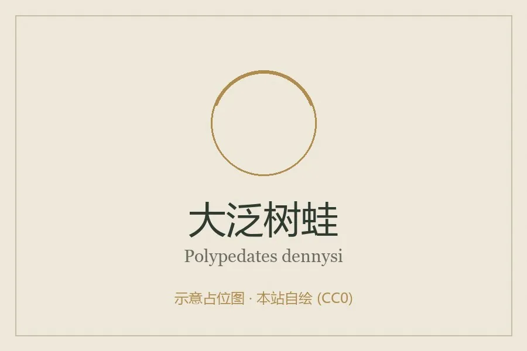

两栖动物 · 动物界
大泛树蛙 Polypedates dennysi

中国南方体型最大的树蛙之一，背部翠绿、趾端有吸盘，繁殖时在水面上方筑泡沫巢，蝌蚪孵化后落入水中。
- 分类
- 门脊索动物门纲两栖纲目无尾目科树蛙科属泛树蛙属
- 栖息环境
- 山地森林、灌丛、农田与村落附近的水边植被
- 地理分布
- 中国南方多省区及越南、缅甸等东南亚国家
- 保护级别
- IUCN 无危（LC）；中国未列入国家重点保护名录
物种志
大泛树蛙体长 8–10 厘米，雌蛙明显大于雄蛙，是体型较大的树蛙。它头部宽大，吻端钝圆，皮肤光滑，背面呈鲜绿色或暗绿色，散布少量深色斑点，腹面淡黄；趾端膨大成吸盘，趾间有蹼，既善攀爬也善游泳，四肢后侧常带深色网纹。
它分布于中国南方以及越南、缅甸等地的山地森林、灌丛和农田，夜间活动，捕食昆虫和蜘蛛。繁殖期雄蛙聚集在水边鸣叫，雌蛙与雄蛙抱对后在水面上方的枝叶上排出分泌物，用后肢搅拌成泡沫巢，卵产于其中，约一周后蝌蚪孵化并落入下方水体。它适应力较强，能在稻田和人工水景附近繁殖，目前种群较稳定；它未被列入国家重点保护名录，但捕捉和破坏繁殖地会影响其数量。
形态与习性
- 食性昆虫和蜘蛛
- 体长8–10 cm，雌蛙较大
- 寿命约 8–10 年
- 繁殖卵生，卵产于水面上的泡沫巢，约一周后孵化
- 活动节律夜行性
- 特点趾端吸盘发达，四肢后侧有深色网纹
趣味知识
- 大泛树蛙是中国南方体型最大的树蛙之一，雌蛙比雄蛙大得多。
- 它用分泌物和后肢搅拌出泡沫巢，把卵挂在水面上方的枝叶上。
- 蝌蚪从泡沫巢中孵化后会直接落入下方水中继续发育。